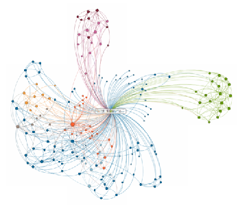
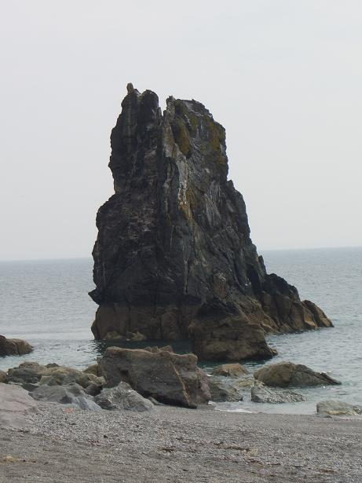
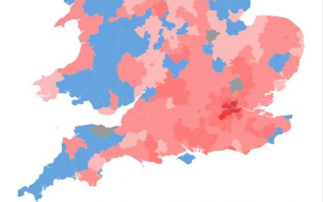

Data Analytics Demo Page -
Fujitsu
.
Project BANDIT

News Graph Example (scroll for nodes)
hover on links to see values

Current Backlog

Map points Example (click for long/lat)
Desired Functionality (Graph)
Large graph example
Wait and zoom to 25%
Desired Functionality (Pan/Zoom)
Other Projects